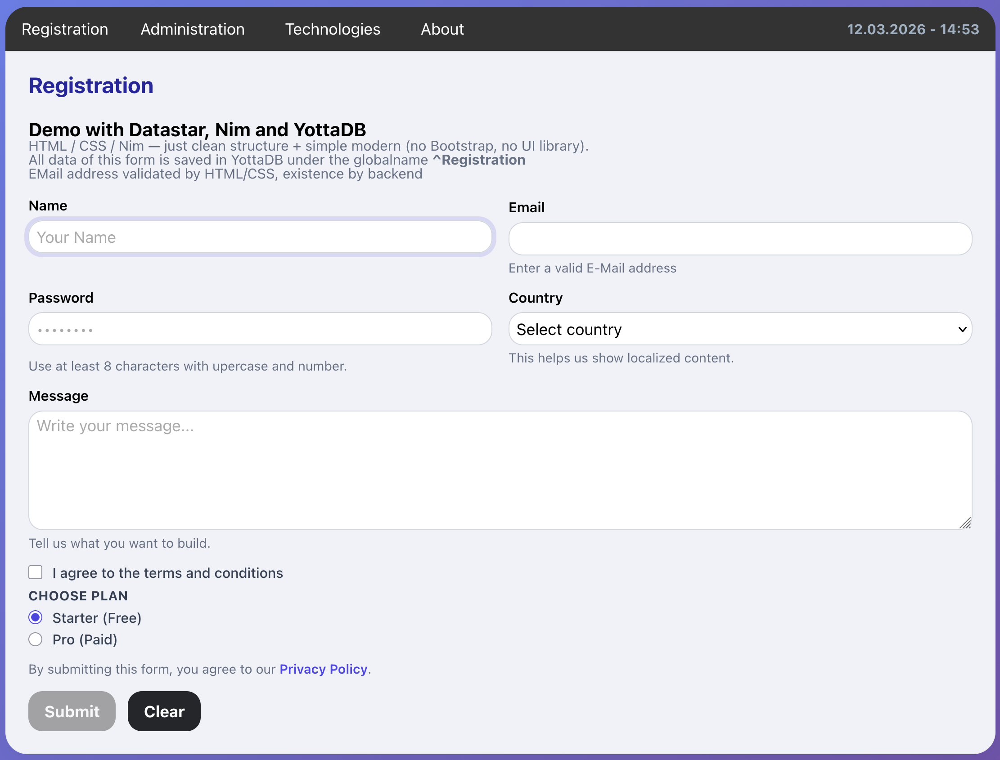
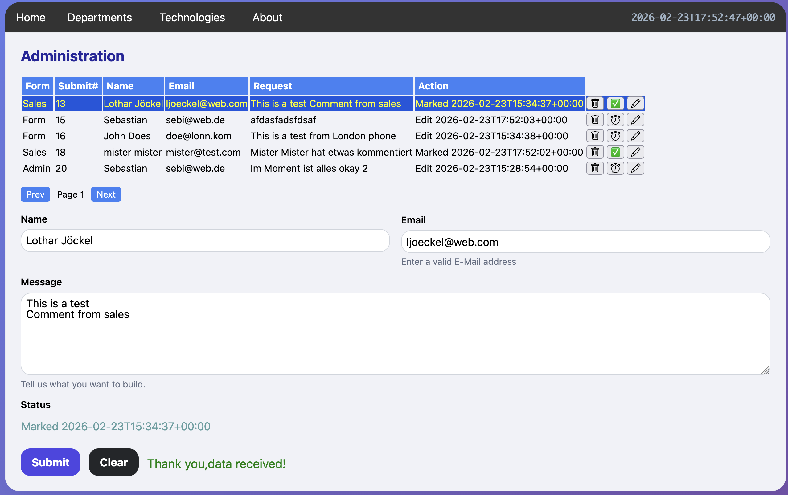

This repository contains sample applications for the nim-yottadb library. It demonstrates how to leverage Nim’s performance to interact seamlessly with the YottaDB NoSQL database.
text/html and Server-Sent Events (SSE) for real-time
backend-to-frontend updates.Ensure you have YottaDB and Nim installed. For detailed setup instructions, please refer to the main repository: 👉 Installation Guide for YottaDB & Nim
A lightweight web application demonstrating how to capture, validate, and persist form data directly into YottaDB.


Launch the server directly using: nimble demo or go to
src/datastar and run ```nim nim c -r –mm:arc –threads:on
–passL:“-L/usr/local/lib/yottadb/r203 -lyottadb” formtx.nim
When using transactions, data must be passed from the main thread to
the transaction thread using YottaDB variables (e.g.,
context). This ensures thread safety and data consistency
within the YottaDB Transaction
lifecycle.
```nim # 1. Map data to the YottaDB context variable for key in signals.keys: setvar: context(key) = $signals[key]
let rc = Transaction: let id = increment ^datastar(“submits”) for (key, value) in queryItr context.kv: setvar: ^datastar(id, key) = value